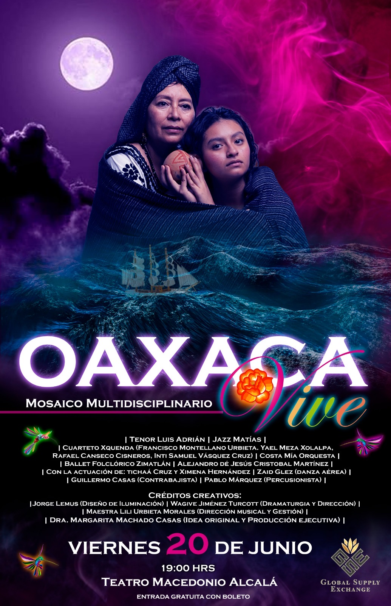
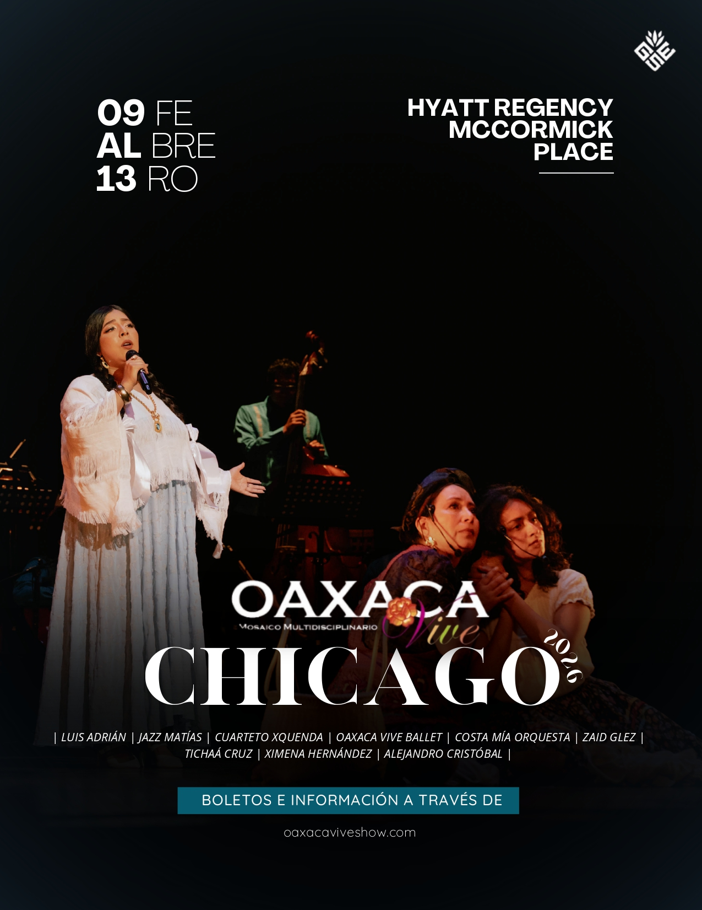
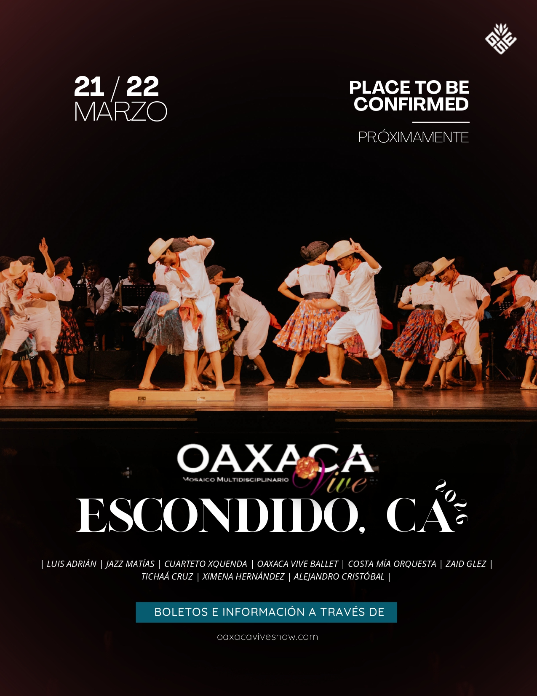

¡No te pierdas nuestros próximos eventos y espectáculos!

Oaxaca Vive: Mosaico Multidisciplinario es un espectáculo único que celebra la grandeza cultural de Oaxaca a través de la música, la danza, el teatro y las artes visuales. En un solo escenario, se entrelazan tradiciones ancestrales con propuestas contemporáneas, dando vida a un relato que honra la identidad de un pueblo que resiste y se transforma.

Oaxaca Vive: Mosaico Multidisciplinario llega a Chicago para presentar un espectáculo que reúne música, danza, teatro y artes visuales, celebrando la riqueza cultural de Oaxaca. Disfruta de la participación de Luis Adrián, Jazz Matías, Cuarteto Xquenda, Oaxaca Vive Ballet, Costa Mía Orquesta, Zaid Glez, Tichaá Cruz, Ximena Hernández y Alejandro Cristóbal.
Boletos e información a través de oaxacaviveshow.com

Oaxaca Vive: Mosaico Multidisciplinario se presentará en Escondido, California. Vive la experiencia de la cultura oaxaqueña con la participación de Luis Adrián, Jazz Matías, Cuarteto Xquenda, Oaxaca Vive Ballet, Costa Mía Orquesta, Zaid Glez, Tichaá Cruz, Ximena Hernández y Alejandro Cristóbal.
Boletos e información a través de oaxacaviveshow.com